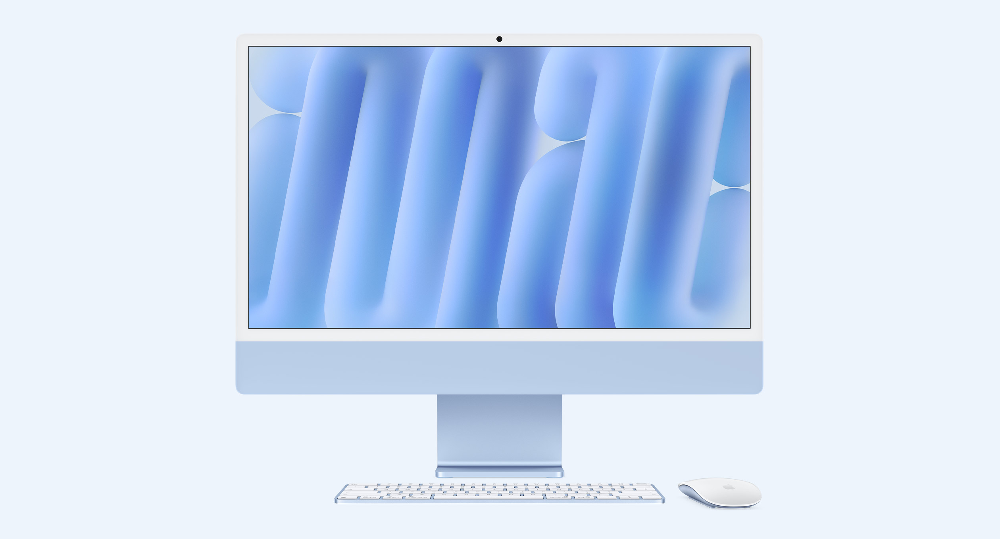
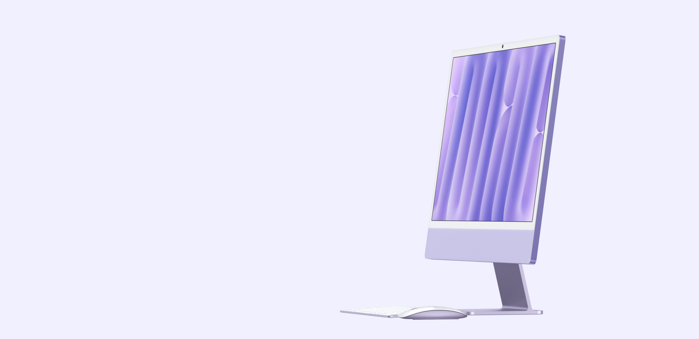
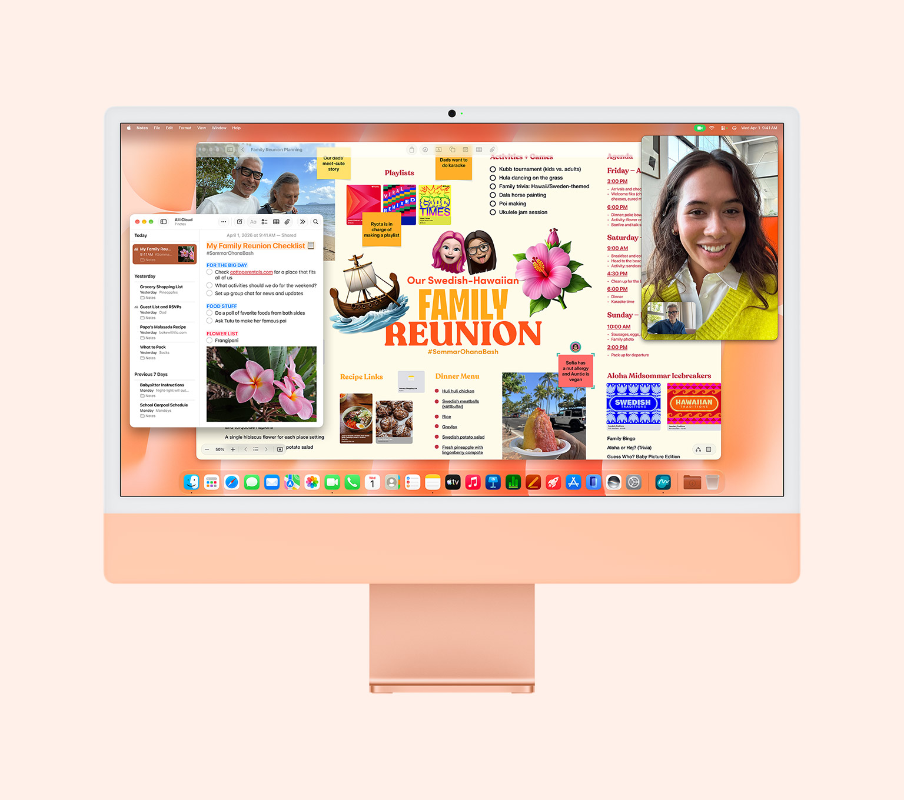
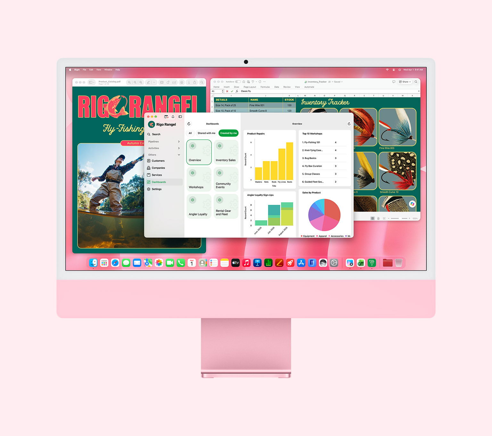
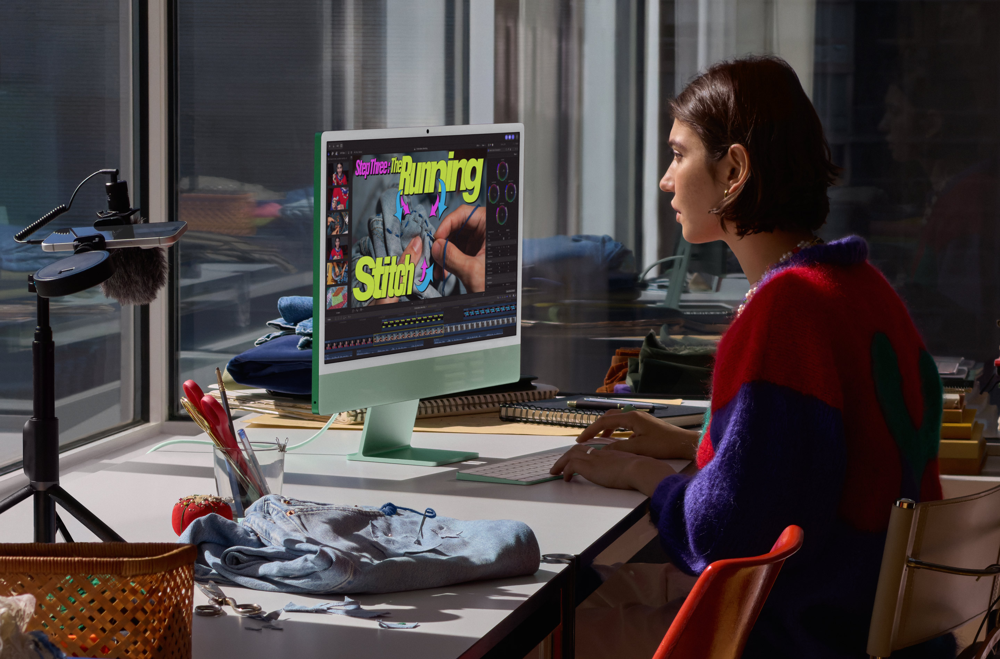
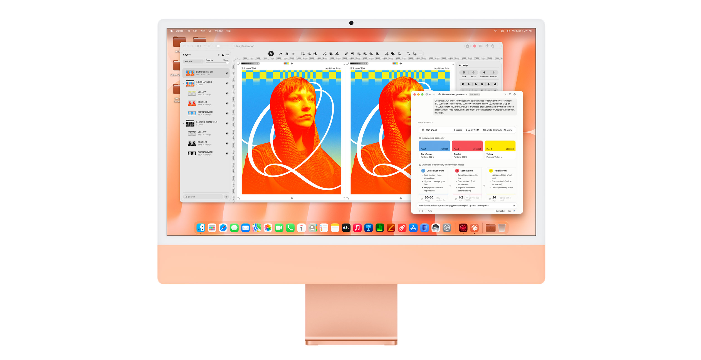

Find your next answer.
Ask questions, explore ideas and keep your train of thought moving with Siri AI in Spotlight.
Hello, possibility.
Now with M6.

Get the highlights.

Strikingly thin. Beautiful from every angle. An all-in-one desktop that brings a little more you to any space.
Take a closer lookTake a closer look.
iMac in Blue
Performance
The brilliant all-in-one desktop is powered by the M6 chip — making everything you do smoother, snappier and more efficient. From browsing in Safari to editing photos and videos, iMac keeps up with your day. Up to 32GB of unified memory makes multitasking feel effortless.



Made for your kind of day.
AI
From families and creative professionals to small business owners, iMac brings AI into everyday workflows. Explore ideas, edit images and get more done with tools that fit the way you work.

Mac is optimised to handle AI apps — including Claude, LM Studio, Gemini and tools from Topaz Labs — so you can learn faster, think in new ways and get more done.
Apple Intelligence and Siri AI
Helpful intelligence, integrated into your apps and built with privacy at its heart.
Ask questions, explore ideas and keep your train of thought moving with Siri AI in Spotlight.
Draft something new, refine your writing and find the right tone for your message.
Reframe your photos, explore creative edits and give your favourite moments room to shine.
Describe a shortcut to connect actions across apps and simplify the things you do every day.
On-device processing helps keep personal information on your Mac. Private Cloud Compute can handle more complex requests while protecting your data. Feature availability varies by language, region and software version; usage limits may apply.
Display
An expansive 60.96 cm (24″) Retina display is a brilliant canvas for multitasking, immersive movies, games and everything in between. With 4.5K resolution, 500 nits of brightness and P3 wide colour, every detail comes to life.
4.5KRetina display
500 nitsof brightness
1 billioncolours
Find your iMac.
Explore available iMac configurations at Iswift Gadgets.
Shop available iMac modelsThe current catalogue lists iMac with M4. Model, colour and availability are shown before purchase.